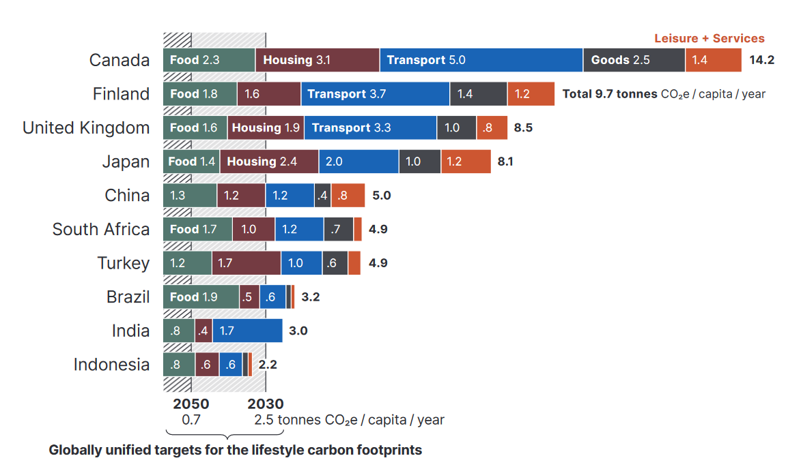
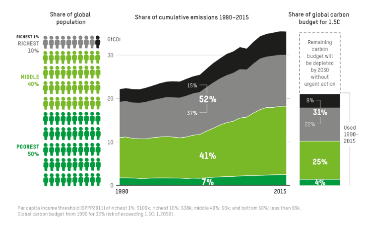

Lecture 8 – Solutions to Climate Change
These notes accompany the lecture “Solutions to Climate Change” held at Lund University on May 10th, 2023. They are intended to facilitate learning, but should not be cited in any work. You can find the slides at the bottom of this text.
This lecture provides an overview of the history of solutions to climate change. We will discuss the COP system and group proposed solutions into technology and lifestyle changes. For each, we will examine what the most impactful measures would be and potentially discuss some policy options for implementing them.
Be able to list and describe different proposed lifestyle and technological solutions to climate change
Be able to critically evaluate the most common solutions to climate change with regard to possible impact and feasibility
Gain an overview of selected policy aimed at solving climate change at supra-national (COP) and national level
Throughout this lecture, we will be focusing on mitigation of climate change. On the other end, there are also a range of options, technical and lifestyle, for adapting to climate change. We will not be discussing them today, which does not mean that they are less important, or unnecessary!
The good news first, we have seen some progress in mitigating climate change.
The rate of global GHG emissions growth has slowed in recent years, from 2.1% yr–1 between 2000 and 2009, to 1.3% yr–1 in between 2010 and 2019. (TS.3) {2.2}
A growing number of countries have reduced both territorial carbon dioxide (CO2) and GHG emissions and consumption-based CO2 emissions in absolute terms for at least 10 years. These include mainly European countries, some of which have reduced production-based GHG emissions by a third or more since peaking. Some countries have achieved several years of rapid sustained CO2 reduction rates of 4% yr–1. (TS.3) {2.2} (Pathak et al., 2022, p. 51)
Think about a bathtub that is full of water. In order to stop it from overflowing you can either turn of the faucet, or open the drain at the bottom. These two ways are essentially the same options we have to mitigate climate change. In the climate bathtub, turning off the faucet means to stop adding new greenhouse gases to the atmosphere. Since our planet already uses other sinks for greenhouse gases, the drain of the climate bathtub is already open. Therefor, efforts to remove greenhouse gases from the atmosphere either focus on increasing the current drain, or on finding entirely new drains to open.
Solutions relying on technology
Technological solutions for both the faucet and the drain have been proposed, and we will look at the most relevant ones below. Let us start with finding additional drains.
Carbon Dioxide Removal (CDR)
Carbon Dioxide Removal (CDR) is necessary to achieve net-zero CO2 and GHG emissions both globally and nationally, counterbalancing ‘hard-to-abate’ residual emissions. CDR is also an essential element of scenarios that limit warming to 1.5 °C or below 2 °C (>67%) by 2100, regardless of whether global emissions reach near zero, net-zero or net negative levels (Pathak et al., 2022, p. 114).
A lot to unpack here. Net-zero refers to the balance between the amount of greenhouse gas emissions produced, and the amount removed from the atmosphere, so that the overall emissions released into the atmosphere are zero. Hard-to-abate residual emissions mean the emissions that cannot be fully eliminated by current mitigation technologies. The scenarios that are mentioned are the IPCC’s way of expressing different possible pathways of future greenhouse gas emissions, which take into account various factors such as socio-economic development, energy use, and policy measures.
Using scenarios like this can help provide insights into what might happen, when reality is too complex to predict what will happen. This means that they are hypothetical and intended to explore and illustrate different possible futures based on a range of assumptions about factors such as population growth, economic development, and technology use. The scenarios range from very low to very high emissions and use a range of assumptions that may be grouped from reasonable to speculative (Warszawski et al., 2021).
Carbon Dioxide Removal seeks to remove carbon from the atmosphere and store it in another carbon sink.
Pathak et al. (2022) list various options for Carbon Dioxide Removal ranging from ramping up natural carbon sequestration, such as afforestation, to highly technical solutions such as direct air capture or electrochemical CO2 removal from ocean water.
But there are a number of important aspects to note about Carbon Dioxide Removal.
Nature based methods for Carbon Dioxide Removal are potentially vulnerable to climate change outcomes, for example wetlands might dry up under droughts or increasing forest fires. They might also increase non-climate pressures on ecosystems, for example the amount of nitrogen in soils and nitrous oxide in the atmosphere. Additionally, there might be potential unintended consequences such as increasing global temperatures through a lower albedo, because forested land absorbs more of the sun’s energy than snow covered land due to the darker surface area. This might also impact water cycles, Portmann et al. (2022) argue.
Technological Carbon Dioxide Removal methods require energy. Energy that needs to come from a carbon free source. Such energy is, however, needed elsewhere to reduce the carbon intensity of our energy usage. The carbon removed also needs to be stored somewhere. Most commonly geological reservoirs are proposed for this. But research on the acceptability and feasibility of this at scale is lacking.
For a list and comparison of Carbon Dioxide Removal options, their potentials and risk you can consult the table on pages 115-116 of Pathak et al. (2022). While Carbon Dioxide Removal may play a crucial role in the IPCC’s scenarios that limit warming to 1.5 and many of the scenarios that limit warming to under 2 degrees Celsius, their successful employment is uncertain (Pathak et al., 2022, p. 113).
It appears that the drain of our climate bathtub is largely set. If we want to stop the bathtub from overflowing, let us then turn to actions we can take to slow the inflow.
We will review the highest impact solutions for each of the biggest sectors.
Food Systems
Although food systems are not one of the biggest sectors, it makes sense to discuss technological solutions for their corresponding sector agriculture and agroforestry through this lens. Mainly because the sixth IPCC Assessment Report has concrete technological ideas for food systems.
It states:
Emerging food technologies such as cellular fermentation, cultured meat, plant-based alternatives to animal-based food products, and controlled environment agriculture, can bring substantial reduction in direct GHG emissions from food production (limited evidence, high agreement). These technologies have lower land, water, and nutrient footprints, and address concerns over animal welfare. Realizing the full mitigation potential depends on access to low-carbon energy as some emerging technologies are relatively more energy intensive (Pathak et al., 2022, p. 113).
The report also stresses that in order to realize the potential, changes across the entire supply chain are needed, including waste management. This includes changes in growing of food, processing of food, its transport and disposal. The technologies involved range from digitalization or different coolants to gene technology (Pathak et al., 2022, pp. 111–112).
Mobility
The main takeaway for technological solutions to mobility is that we need to switch to electricity powered vehicles where-ever possible. Where this is too difficult or impossible, such as in the aviation industry, alternatives such as biofuels, hydrogen or synthetic fuels may be an alternative, if they are produces with low or no carbon emissions.
As the current types of lithium-ion batteries depend on rare metals, issues related to their mining arise from a wide adoption. On this issue, the IPCC highlights that lithium-ion batteries have a high potential to be recycled and closed systems for batteries may help alleviate pressures, but will not remove them entirely.
Frequently in this discussion you will hear people bring up these alternatives as fuel for individual person transport (cars). While this might seem like a promising idea, the IPCC places more emphasis on those as alternatives more urgently needed in those ‘hard-to-abate’ parts of the transport sector, such as flying, long-haul heavy-duty transport, shipping (Pathak et al., 2022, p. 99).
Buildings and Housing
Global GHG emissions from buildings were 12 GtCO2-eq in 2019, equivalent to 21% of global GHG emissions. Of this, 57% (6.8 GtCO2-eq) were indirect emissions from off-site generation of electricity and heat, 24% (2.9 GtCO2-eq) were direct emissions produced on-site and 18% (2.2 GtCO2-eq) were embodied emissions from the production of cement and steel used in buildings (high confidence) (Pathak et al., 2022, p. 100).
That is a lot! Notice that about half of buildings emissions come from the consumption of electricity and heat.
For building and housing the technological solutions begin at the design phase. We need to take the lifetime of buildings into account and design them accordingly. For example, Malmö City is building a sharing community at Sege Park. They realize that people currently still need and want cars for mobility. Accordingly, they have built a parking garage for those cars. However, they have strategic plans to reduce car ownership across the entire city and have therefore designed the parking garage in a modular way that can be changed to meet new demands. You can read more about this on the website for Sege Park (in Swedish).
The second big principle for housing is to construct them with low-emission materials and for high efficiency using renewable energy. This means substituting cement and steel for wood, installing renewable energy from the start, and ensuring high standards when it comes to insulation.
Where buildings already exist, the IPCC focuses on optimizing the use and supply of energy. For example, where fossil fuels such as gas are used to provide heating for the building, replacing these technologies with, for example, electricity driven heat-pumps. In addition to this optimization of the supply of energy, houses can be retroactively insulated, or outfitted with smart meters to optimize the energy they consume.
Lastly, new technology to reuse and recycle buildings is needed. In the example of the parking garage in Malmö above, the reuse of constructing elements has already been considered during the design phase of the building.
Industry
And then there is industry. The overview of this lecture is too short to really dig into technological solutions across industry. Instead, note in the following answer to the Frequently Asked Question “What are the key options to reduce industrial emissions?”, the call on several strategies at once.
What are the key options to reduce industrial emissions? Industry has a diverse set of greenhouse gas (GHG) emission sources across subsectors. To decarbonise industry requires that we pursue several options simultaneously. These include energy efficiency, materials demand management, improving materials efficiency, more circular material flows, electrification, as well as carbon capture and utilisation (CCU) and carbon capture and storage (CCS). Improved materials efficiency and recycling reduces the need for primary resource extraction and the energy-intensive primary processing steps. Future recycling may include chemical recycling of plastics if quality requirements make mechanical recycling difficult. One approach, albeit energy intensive, is to break down waste plastics to produce new monomer building blocks, potentially based on biogenic carbon and hydrogen instead of fossil feedstock. Hydrogen can also be used as a reduction agent instead of coke and coal in ironmaking. Process emissions from cement production can be captured and stored or used as feedstock for chemicals and materials. Electricity and hydrogen needs can be very large but the potential for renewable electricity, possibly in combination with other low carbon options, is not a limiting factor (Bashmakov et al., 2022, p. 1223).
Notice the pattern across all sectors. We need to shift to low carbon alternatives where-ever possible. Where that is not (yet) possible, we must improve the efficiency of existing technology. This shift to cleaner alternatives implies that we need low-carbon intensity energy.
Clean Energy
Providing sufficient clean energy is going to be, what the IPCC calls a “major transition” (Shukla et al., 2022, p. 28). It will require changing how we produce, transport and store energy. Historical energy transitions have taken a long time and the world is still firmly in the age of oil (Kander et al., 2013). For an enjoyable read that clearly illustrates how much energy will be needed and how much different clean sources might be able to provide have a look at MacKay (2011).
Summary of technological solutions
This very high level overview of different technological solutions in the main sectors should highlight three things to you. First, technological solutions exist. The general idea for virtually all of them is to shift to non-carbon energy sources and to improve the efficiency of their end use. Second, these changes sound easier on paper than in reality. All this clean energy needs to be produced somewhere, and then it needs to get to where it is needed. Building and changing infrastructure and physical capital is going to require substantial financial and labor efforts. Lastly, even if we adopt all the technological solutions there will have to be changes in lifestyle as well. Installing new heating systems will only take us so far in decarbonizing housing, if people in response turn up the thermostat.
The technological solutions of shift and improve are joined by the most important of Creutzig et al.’s (2022) framework: avoid.
Lifestyle Solutions
The sixth IPCC report is the first to include a dedicated section to demand and lifestyle changes to mitigate climate change. And that despite widespread agreement about the importance of such measures.
Individuals often focus on changing low-impact behaviors
Researchers from Lund University have analyzed a broad range of government and educational recommendations for individual mitigation behavior. They discovered that what people think – and are recommended to do – and what actually has a big impact on individual CO2 emissions are often not the same. Instead of focusing on small impact actions such as turning off lights, individual behavior should focus on big impact actions such as flying less, living car free and switching to a plant based diet (Wynes & Nicholas, 2017).
The study also found that the decision with the biggest impact on an individual’s climate footprint is how many children to have. In her book Under the Sky We Make Kimberley Nicholas (2021) expands on this finding with reflections on the media coverage. In the media, the statement that deciding how many children to have is a big impact decision was sometimes represented along the lines of “Scientist want you to have fewer children!”. However, what she explains in her book, and what might be a good rule of thumb for all these decisions is: think about the impact that a decision you make has. It will not be possible to reduce your carbon emissions to zero, so you must decide where, when and how to allocate your emissions.
Akenji et al. (2021) estimate that your personal lifestyle carbon footprint – meaning the amount of carbon per capita that is compatible with staying within the global carbon budget to limit warming to well below 1.5 degrees Celsius without relying on negative emission technologies –
needs to be reduced to only 0.7 tonnes CO2 equivalent by 2050. By 2030, the report estimates that we need to reduce per capita carbon footprints of lifestyles to approximately 2.5 tCO2eq (p. 42). If you are interested in learning more about your own carbon footprint, there are a number of calculators available online. Be aware that they make certain assumptions, for example, about the carbon intensity of a country’s energy mix. For Sweden a good option is Klimat Kalkylatoren.
Figure 1 shows the current lifestyle footprints of countries analyzed in the report broken down by consumption domains. When you examine the figure, pay attention to the variance between different countries within the same consumption domain. Countries like Canada have almost three times higher footprints related to food than, for example, India.

Lifestyle Change Within Societal Context
Figure 1 hopefully also illustrates that our societal context plays a big role in how individual change can unfold.
The assigned reading for this lecture focuses strongly on this point as well.
Otto et al. (2020) take a strong societal perspective in their attempt to identify social tipping points for climate compatible lifestyles. Figure 2 shows the most relevant ones.

When reading the article, try to answer these reading questions.
The second mandatory text by Newell et al. (2021) also includes a strong emphasis on systemic change. But it also reviews individual behaviors and attempts to integrate the two strategies for scaling lifestyle change.
Newell et al. (2021) is also very explicit on their doubts that the technological solutions outlined above will suffice on their own. They connect it to notions of weak and strong sustainability, which have been covered earlier in the course.
A major argument of Newell et al. (2021) is that the context in which we expect lifestyles to change needs to be considered. Approaches that focus on behavior change alone, overlook that people are subject to choice constraints. For example, being able to purchase ecological produce at the supermarket requires not only the financial means to do so, but also the availability of ecological products. Changing mobility behaviors from cars to public transport requires there to be feasible public transport options.
If we relate this once again to Figure 1 it becomes even clearer that the context in which people are asked to make lifestyle changes matters a lot. This context includes formal and informal institutions, infrastructure, habits and more. Of course, this also means that lifestyle changes which scale in one context, might not function to the same extent in another (Newell et al., 2021). Which, to promote our discipline a bit, is often at the core of economic history research!
Whose lifestyles?
There is one more aspect that should be highlighted when discussing lifestyle changes. That is a strong correlation between affluence and environmental pollution. One way of looking at this is the Environmental Kuznet’s Curve, which was covered earlier in the course. Another way to look at this is to examine pollution on an individual basis, instead of a country level.
Figure 3 shows a figure reproduced from Gore (2020, p. 3). It illustrates that the distribution of carbon emissions is very unequal. While the poorest 50% of the world have only contributed 7% of cumulative emissions between 1990 and 2015, the global top 10% are responsible for emitting 52% of cumulative emissions in the same time period. It is this small amount of people which is sometimes referred to as the polluter elite. The 630 million people that make up the 10% must make the most drastic changes to their current lifestyles, which includes but is not limited to, flying less, giving up SUVs, investing their money in more responsible assets.

Summary of Lifestyle Solutions
Lifestyle changes are necessary to mitigate climate change. People can make decisions with big impacts on their personal carbon footprint, but keeping track of them at all times is challenging.
The framework Creutzig et al. (2022) propose might be a good heuristic if in doubt:
Avoid, Shift, Improve.
Here, we generalize ‘avoid’ to all mitigation options that reduce wasteful energy consumption by redesigning service provisioning systems; ‘shift’ to the switch to already existing competitive low-carbon technologies and service provisioning systems; and ‘improve’ to improvements in efficiency in existing technologies where adoption by end users plays an important role. (Creutzig et al., 2022, p. 37).
But placing the burden of these changes on individual behavior alone is problematic because it underestimates the role that context plays in individual agency. What we need is individual behavior change and structural transformation. Otto et al. (2020) provide a good roadmap with estimates of how long it might take to achieve such deeper changes in Western societies. Newell et al. (2021) highlight the interplay between individual behavior change and system change. Next we turn to examples of policies to mitigate climate change.
Policy
Governments at all levels have a crucial role to play in addressing this global crisis, and this subsection will focus on the policies that can be implemented to reduce greenhouse gas emissions and limit global warming. Specifically, we will explore some key strategies and initiatives that are being pursued at the supranational and national levels, as well as the role of climate litigation in holding governments and corporations accountable for their contributions to climate change
But before that, some good news. The IPCC reports that half of the worlds emissions are covered by laws and policies around the globe already (Pathak et al., 2022).
Other policy ideas exist as well. Recall the idea of sustainable carbon budgets from above. Fuso Nerini et al. (2021) call for policy that uses this notion to implement personal carbon allowances
Supra-National
Supranational policies are those that are developed and implemented by international organizations or agreements that involve multiple countries. These policies can be important tools for addressing climate change, as they can help to coordinate action and establish global standards for emissions reductions. One example of those, was already discussed earlier in the course: the Sustainable Development Goals (SDG).
Here, we will take a look at the United Nations Framework Convention on Climate Change (UNFCCC), the Intergovernmental Panel on Climate Change (IPCC) and the Conference of Parties (COP).
The UNFCCC, the IPCC and COP
The UNFCCC entered into force on 21 March 1994. Today, it has near-universal membership. The 198 countries that have ratified the Convention are called Parties to the Convention. Preventing “dangerous” human interference with the climate system is the ultimate aim of the UNFCCC (What Is the United Nations Framework Convention on Climate Change? | UNFCCC, n.d. np).
For an interactive timeline of the United Nations Framework Convention on Climate Change check out their website.
The IPCC is a scientific body that was established by the UN in 1988. It provides policymakers with regular assessments of the scientific basis of climate change, its impacts, and options for mitigation and adaptation. The IPCC is composed of hundreds of scientists from around the world who volunteer their time to assess the latest scientific research on climate change. Its assessments are widely regarded as the most authoritative source of information on climate change and are used by governments and organizations around the world to inform their policy decisions. This lecture makes extensive use of the Sixth Assessment Report, especially in the first section.
Lastly, the Conference of the Parties (COP) is the governing body of the UNFCCC. It is made up of representatives from all countries that are party to the convention and meets annually to assess progress in dealing with climate change and to negotiate and adopt new measures to address it. The most significant COP was COP21, which resulted in the adoption of the Paris Agreement in 2015.
Together, the UNFCCC, IPCC, and COP provide a comprehensive framework for addressing climate change at the international level. The UNFCCC sets the overall objective and legal framework, the IPCC provides the scientific basis for action, and the COP negotiates and adopts measures to achieve the objectives of the UNFCCC.
The Paris Agreement in 2015
The Paris Agreement, which was adopted in 2015, was a breakthrough milestone in the global response to climate change. It recognized for the first time that climate change requires a global response with mitigation action from all countries. The agreed goal of this effort is to limit global warming to well below 2 °C above pre-industrial levels, with a goal of limiting warming to 1.5 °C. And, importantly, it established a legally binding framework for all countries that ratified the agreement, with continuously updated targets and evaluations, the so called Nationally Determined Contributions (NDCs).
National Policies
These contributions can be pursued through national, regional and municipal policies. Here we will focus on some of the most often discussed policy schemes instead of individual policies. The policies are loosely grouped into three categories: economic policies, regulatory policies and systemic policies. Please note that this taxonomy is not very strict and policies might well be grouped differently or belong to multiple groups.
Economic
The most common economic policy proposals include a carbon tax, emission cap and trade schemes and subsidies for low carbon options.
A carbon tax is a type of tax that is levied on the production, distribution, or use of fossil fuels based on the amount of carbon dioxide they emit. By making fossil fuels more expensive, a carbon tax can incentivize individuals and businesses to reduce their greenhouse gas emissions.
Emission cap and trade schemes are similar in that they aim to correct a market failure by internalizing some social costs of carbon. This policy involves setting a limit (cap) on the total amount of greenhouse gas emissions that can be released by a particular sector or country. Companies or countries are then allowed to trade emissions allowances, which provides an economic incentive to reduce emissions.
These two policies are often criticized as economically unfair. The consequence putting a price on Greenhouse Gas (GHG) pollution is that prices of products and services which are responsible for their emission also go up. This can affect low income households more than richer households, and might make them politically contested. Research on the acceptability of price policy suggests that such concerns are not warranted if the policy includes a counterbalancing mechanism (Maestre-Andrés et al., 2019). For example, every person could receive a climate dividend based on the sustainable carbon budget per capita, or the revenue could be used only for promoting low carbon alternatives.
The promotion of low carbon alternatives could, for example, happen through specific subsidies.
Regulatory
But there are other non-market based policy options available as well.
Policymakers could use choice editing to changing the default options or incentives in order to encourage individuals and businesses to make more sustainable choices. For example, Germany plans to prohibit the installation of heating units running on fossil gas in 2024. This would remove a choice from consumers increasing the roll-out of low-carbon alternatives such as heat pumps.
Big potential also comes from the protection and conservation of nature. Apart from ensuring that existing carbon sinks are not subjected to even more pressure this can have various co-benefits, for example for biodiversity.
Systemic
Lastly, there are more systemic policy alternatives that receive a lot of attention. This includes Degrowth and the Doughnut Economy, to name only two examples which have been already discussed in more depth in this course. Rather than being individual policies these are interconnected and deeper changes to the goals, functions and methods by which policy makers act.
Who drives climate change policy?
Lately there has been an increase in courts driving climate and other environmental issues. Groups of activists as well as individuals have been suing both governments and private entities. For example, Saul Luciano Lliuya is suing the German energy company RWE for damages to his house and home village in Peru due to floods from a glacial lake (The Climate Case - Saúl Vs. RWE, n.d.). In Sweden, a group of youth activists is suing the Swedish government for lacking processes and ambitions to mitigate climate change, known as the Aurora case (Auroramålet, n.d.). These examples highlight that courts are being called upon both by individuals and collectives targeting private and government actors. The Climate Change Litigation Databases collects past and ongoing lawsuits, together with a host of relevant documents.
Summary
Climate change is a massive challenge for our civilization. It can often feel daunting and impossible to solve, but solutions do exists. In some cases we have a very good idea of what needs to happen, in others more research is needed. Hoping that any single action will be enough, or that we might be able to “fix it” using technology only is a very big and uncertain gamble.
Scaling changes in lifestyles needs to be mindful of both individual behavior change and deep transformations of social systems. This is especially true for the lifestyles of the minority that pollutes the most.
Legislation at various levels already exists to tackle climate change, but more is needed. Ambitious policy ideas have been developed from very concrete and specific solutions to broad and systematic approaches. The fact that litigation against climate inaction is increasingly on the agenda further highlights that many tools exist within our systems to be used against the fossil regime.
One last important aspect to be mindful of is so-called Carbon Tunnel Vision. Many of the solutions to climate change can have adverse outcomes on other planetary boundaries or the wellbeing of people. Wanting to increase the growth rate of photosynthesis sinks might make you want to use fertilizer. But this can have negative consequences on other ecosystem services and biodiversity levels. On the other hand, many solutions to climate change also have co-benefits for other environmental issues such as setting aside nature to be protected and conserved.
The need for change is urgent. But the possibility for it is large.